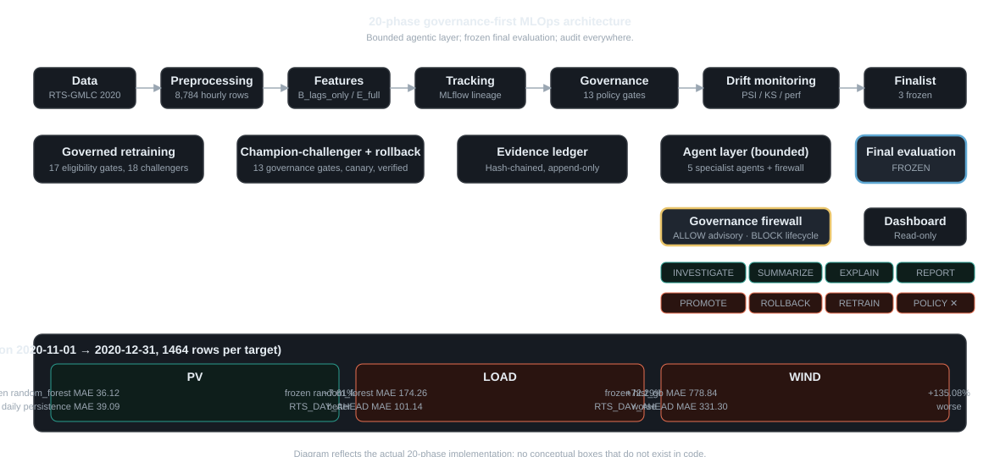
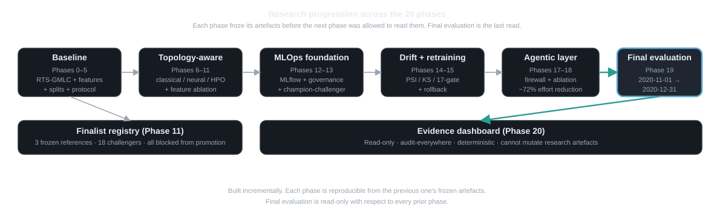

The problem
Operating an MLOps forecasting system for energy is hard because the system that monitors the model, the system that retrains it, and the system that promotes it all want to make the same kinds of decisions: change the model, change the policy, change the data, change the threshold. When an autonomous agent is added to that mix, it tends to drift toward the highest-leverage action: change the policy, promote the model, retrain. That is also the most dangerous action in a safety-critical setting.
Most "agentic MLOps" projects solve this by making the agent the operator: it makes the calls, the dashboard reports. We asked the opposite question: can a bounded, firewalled agent reduce explanation burden without controlling the lifecycle?
The dataset is RTS-GMLC 2020 (8,784 hourly rows of electricity load, wind, and PV for the Texas system). We locked the final test partition (2020-11-01 → 2020-12-31, 1464 rows) before doing any model work, then built the deterministic MLOps lifecycle first and the agent layer second, then evaluated the final models on the locked partition exactly once.
The solution
A 20-phase pipeline that ends in a frozen, fully audited evaluation on the locked test partition. Five specialised agents sit beside the lifecycle and can only explain, retrieve, and report — they cannot promote, retrain, or change features.
- Tracking & governance — every model, run, and decision is captured with cryptographic identity.
- Drift monitoring — PSI / KS feature drift, prediction drift, and rolling performance drift over 168-hour windows.
- Governed retraining — retraining requests pass a 17-gate policy; final results are 18 REGISTERED_CHALLENGER entries, all blocked from promotion by the benchmark gate.
- Champion–challenger + rollback — promotion requires 13 governance gates plus a passing canary; rollback is verified, not just attempted.
- Bounded agentic decision support — a firewall allows only
INVESTIGATE / SUMMARIZE / EXPLAIN / REQUEST_HUMAN_REVIEW / CREATE_REPORT; lifecycle actions are blocked and audited. - Frozen final evaluation — the 18 registered challengers are evaluated on the locked test partition with the frozen reference and a published external benchmark.
Architecture

preprocessing -> features -> governance (training/HPO/finalist registry) -> tracking (MLflow) -> drift monitoring -> governed retraining -> champion-challenger + rollback -> bounded agentic layer (firewalled) -> final frozen evaluation -> evidence dashboard" />
topology-aware model -> classical, neural, and HPO -> MLOps foundation -> drift and retraining -> agentic layer -> final evaluation -> evidence dashboard" />Results
On the locked final test partition (2020-11-01 to 2020-12-31, 1464 hourly rows per target):
| Target | Configuration | MAE | RMSE | sMAPE | nMAE | nRMSE |
|---|---|---|---|---|---|---|
| pv | reference (random_forest, B_lags_only) | 36.122 | 82.079 | 117.735 | 0.1082 | 0.2458 |
| pv | H24_DAILY_PERSISTENCE | 39.095 | 110.825 | 7.863 | 0.1171 | 0.3320 |
| load | reference (random_forest, B_lags_only) | 174.257 | 231.271 | 4.717 | 0.0474 | 0.0628 |
| load | RTS_DAY_AHEAD | 101.142 | 101.845 | 2.717 | 0.0275 | 0.0277 |
| wind | reference (hist_gradient_boosting, B_lags_only) | 778.841 | 923.373 | 92.397 | 0.6790 | 0.8050 |
| wind | RTS_DAY_AHEAD | 331.302 | 491.208 | 50.916 | 0.2888 | 0.4282 |
Lower MAE is better. PV's frozen random forest beats H24 daily persistence by 7.61%. LOAD and WIND are dominated by the published RTS day-ahead forecast on this 2-month window. The system does not claim universal superiority; we present these results as recorded.
Why the negative result matters
The system does not claim universal superiority. We ran the frozen evaluation honestly, the same way we would for a paper, and we present the results as recorded. The PV result is the only benchmark comparison the frozen models win; LOAD and WIND do not. This is scientific integrity, not failure. A system that quietly selects only its best target is more dangerous than one that publishes its mixed outcome. The Phase 19 protocol freeze, the agent firewall, and the read-only evidence dashboard exist precisely to make this kind of honest reporting the default, not the exception.
What makes this different
Most MLOps projects treat "AI for MLOps" as autonomous promotion/retraining. We built the inverse: a bounded, firewalled decision-support layer that reduces explanation burden but cannot control the lifecycle. The other differentiators are concrete artefacts, not slogans:
- Governance firewall for agents. Allowed recommendation types:
INVESTIGATE / SUMMARIZE / EXPLAIN / REQUEST_HUMAN_REVIEW / CREATE_REPORT. Blocked action types:PROMOTE_MODEL / ROLLBACK_MODEL / CHANGE_POLICY / START_RETRAINING / CHANGE_FEATURESplus anything unknown (deny-by-default). The forbidden audit eventsAGENT_MODEL_PROMOTEDandAGENT_RETRAINING_STARTEDcannot be emitted by construction. Evidence:src/smartgrid_mlops/agents/firewall.py+ tests intests/test_phase17_agents.py. - Honest mixed-outcome final evaluation. The frozen final evaluation reports PV winning and LOAD/WIND losing against the frozen references. Evidence:
artifacts/research_tables/final_model_comparison.csv, dashboard section "Results". - Frozen protocol cascade. 20 protocol freezes + sidecar SHA-256s; every prior phase is verifiable before the next phase is allowed to read it. The final test partition is excluded from phases 0–18 and read only once under
AccessMode.FINAL_EVALUATION. - Deterministic evidence pipeline. 8 specialist agents + a supervisor produce structured findings (
Observation/Finding/DecisionReport); every agent action is append-only audited; the MLflow lineage is the source of truth for the final evaluation runs. - Operational benefit measured by ablation, not by user study. Phase 18 measured explanation effort against a deterministic cost model: ~72% time reduction with zero lifecycle outcome difference (0 promotions, 0 challengers, 0 bypasses, 8/8 agent quality probes passing). See
reports/phase_18_completion.md. - Read-only evidence interface. A static dashboard consumes the final evaluation; the builder is the only file that touches Phase 19 artefacts and is itself verified to leave them byte-identical (
tests/test_phase20_dashboard.py).
Interactive demo
The demo is the existing Phase 20 dashboard. It is fully read-only, deterministic, and accessible. It loads from dashboard/data/*.json snapshots built by scripts/build_dashboard.py from the Phase 19 artefacts. No model is re-run, no prediction is recomputed, and the dashboard cannot mutate any research artefact.
Primary demo
Executive overview, per-target performance cards, benchmark comparison, error analysis, model & feature details, evaluation protocol, lineage, governance, audit, artifacts.
Open the dashboardInteractive actual vs predicted
Canvas-based time-series with date-range filter (November or December). Three series: actual, frozen model, external benchmark. Read-only.
Open the chartQuick start
The full 20-phase project is large; a judge who only wants the demo can stop after step 4.
- Clone the repository.
git clone <url> && cd <repo> - Create the venv. Windows:
python -m venv .venv && .venv\Scripts\python.exe -m pip install -e ".[dev]"· Unix:python3 -m venv .venv && .venv/bin/pip install -e ".[dev]" - Open the dashboard.
start dashboard/index.html(Windows) orxdg-open dashboard/index.html(Linux) oropen dashboard/index.html(macOS). The dashboard is a static page; it needs no running server. - (Optional) Rebuild the dashboard data.
.venv\Scripts\python.exe scripts/build_dashboard.py— re-emitsdashboard/data/*.jsonfrom the Phase 19 artefacts (read-only with respect to them). - (Optional) Run the full test suite.
.venv\Scripts\python.exe -m pytest— 231 backend tests + 18 dashboard tests.
Every command in this list has been verified in a clean environment on Windows 10 / Python 3.13. The full RTS-GMLC 2020 dataset (8,784 hourly rows) ships with the repository under data/processed/; no external download is required for the demo or for the test suite. The full pipeline (Phases 0–5) is also self-contained; if you want the full raw RTS-GMLC CSV (used by the audit scripts), see scripts/bootstrap_rts_gmlc.py.
Research evidence
Every claim in this submission is traceable to a recorded artefact. The evidence dashboard above shows the full audit; here is the summary chain:
- Model identity —
artifacts/model_registry/forecasting_reference_registry.yaml+lifecycle_registry.yaml - Frozen protocol —
artifacts/experimental_design/phase_19_final_evaluation_protocol_freeze.yaml(SHA-25679053d6f...) - Final evaluation —
artifacts/experiments/final_evaluation/phase_19/official/(predictions, metrics, summary, Holm–Bonferroni, run manifest, MLflow) - Read-only dashboard —
dashboard/index.html+dashboard/charts.html(this is the primary demo) - Full research documentation —
docs/research_methodology/(20 documents),docs/paper_drafts/(12 documents),reports/phase_00..20_completion.md
Reproducibility
- Test suite: 231 tests, deterministic, zero failures expected. Run
pytest. - Freeze checksums: 20 protocol freezes with sidecar SHA-256s, all verified.
- Phase 19 integrity baseline:
artifacts/ui_build/phase19_integrity_baseline.jsonrecords the SHA-256 of 20 critical Phase 19 artefacts. The dashboard builder is verified to leave them byte-identical (regression test intests/test_phase20_dashboard.py). - Final evaluation: exactly one execution; access was
AccessMode.FINAL_EVALUATIONwithconfiguration_frozen=True; every test-partition timestamp was checked byauthorize_final_evaluation. - Data: 8,784 hourly rows of RTS-GMLC 2020, shipped under
data/processed/. Final test partition (Nov–Dec 2020) excluded from all phases 0–18.
Honest limitations
- One year of one dataset (RTS-GMLC 2020); a single 2-month final test window.
- Classical ML only (random forest, hist gradient boosting, MLP). No deep learning, no quantum / graph / GNN.
- External benchmark (RTS_DAY_AHEAD) is a published operating artefact that is hard to beat on short horizons; the comparison is informative, not aspirational.
- Agent operational benefit is approximated by a frozen cost model (Phase 18), not by a user study.
- Agent layer is local rule-based, not LLM-backed. The LLM_BACKEND_INTERFACE is documented as a contract only; no LLM is invoked during execution.